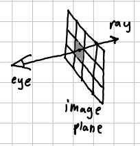

Use WASD to move the camera around.
Use ARROWS to look around.
Press Enter to toggle the model's spinning.
Press G to toggle the model movement gizmo.
When it is active:
Drag the arrows to move along an axis,
Drag the rectangles to move it along a plane.
Press R to toggle the camera render view.
This shows you what each camera sees.
Press F to toggle the camera frustum view.
This shows you each camera's field of view.
This project uses a set of virtual cameras in 3d space to try and triangulate detected movement in a scene.
Each frame, each camera takes a photo.
For each camera, the pixel-wise difference is taken between its previous photo, and the current one.
These differences are used to calculate a weighted average in the photo's screen space of where the most pixels changed.
Then, a ray is projected from camera's position thru that point.
(note: if the difference is negligible, no ray is cast.)

Then, the intersection of each camera's rays is found using gradient-descent. This intersection point should be the point in 3d space where the object was moving!Imagine you are a farmer, and pesky crows keep attacking your crop. You could place 8 cheap cameras around your plot, measure their relative positions. Then with this system you could monitor the crow positions and make the scarecrow move to scare them away.